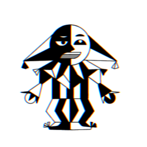

Индивидуальный проект "Мини-игры" от Fun | Sad | Games

Fun|Sad|Games
Правила игры
Плоское или объёмное игровое поле разделено на смежные ячейки, некоторые из которых «заминированы»; количество «заминированных» ячеек можно указать в поле ниже, также как и размер поля.
Открыв ячейку с миной, игрок проигрывает. Если под открытой ячейкой мины нет, то в ней появляется число или пустая клетка, показывающие, сколько соседних ячеек содержит мины. Используя эти числа, игрок пытается рассчитать расположение мин, однако иногда даже в середине и в конце игры некоторые ячейки всё же приходится открывать наугад. Если под соседними ячейками тоже нет мин, то открывается некоторая «не заминированная» область до ячеек, в которых есть цифры. «Заминированные» ячейки игрок может пометить флажками (правой кнопкой мыши), чтобы случайно не открыть их. Открыв все «не заминированные» ячейки, игрок выигрывает.
Задача игрыОткрыть все ячейки, несодержащие мины.Убедительная просьба!Не указывайте очень большие числа в графе размера поля, так как это может перегрузить компьтер.